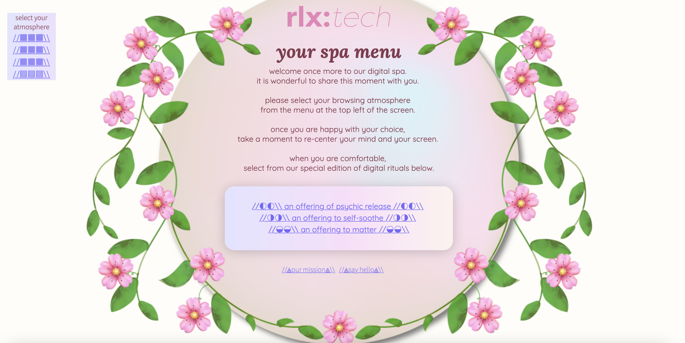
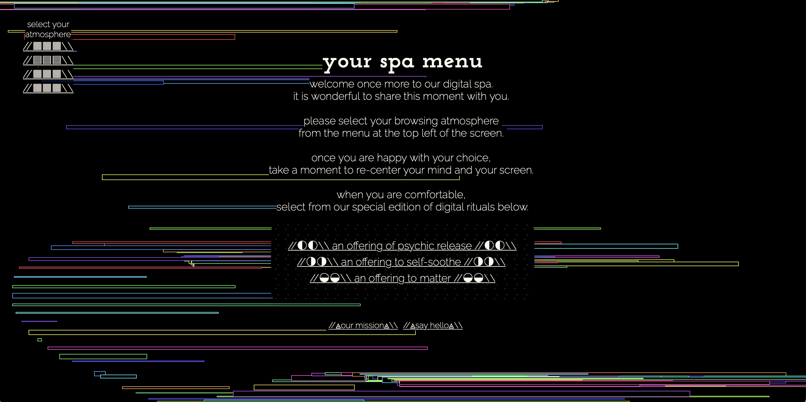
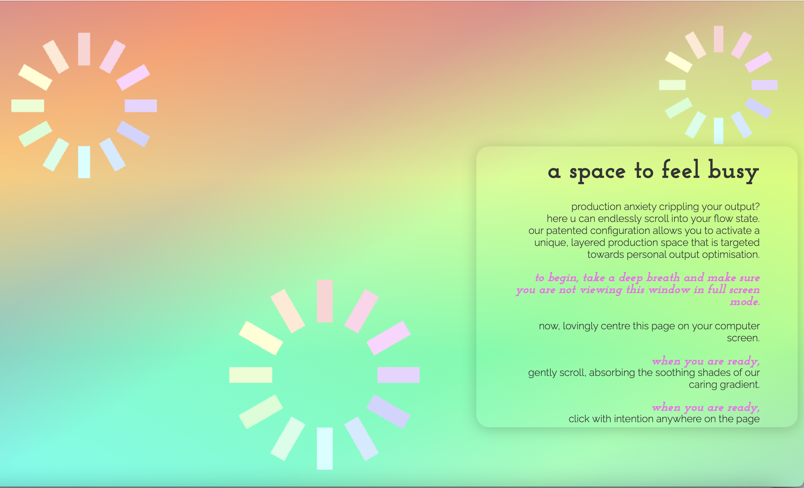
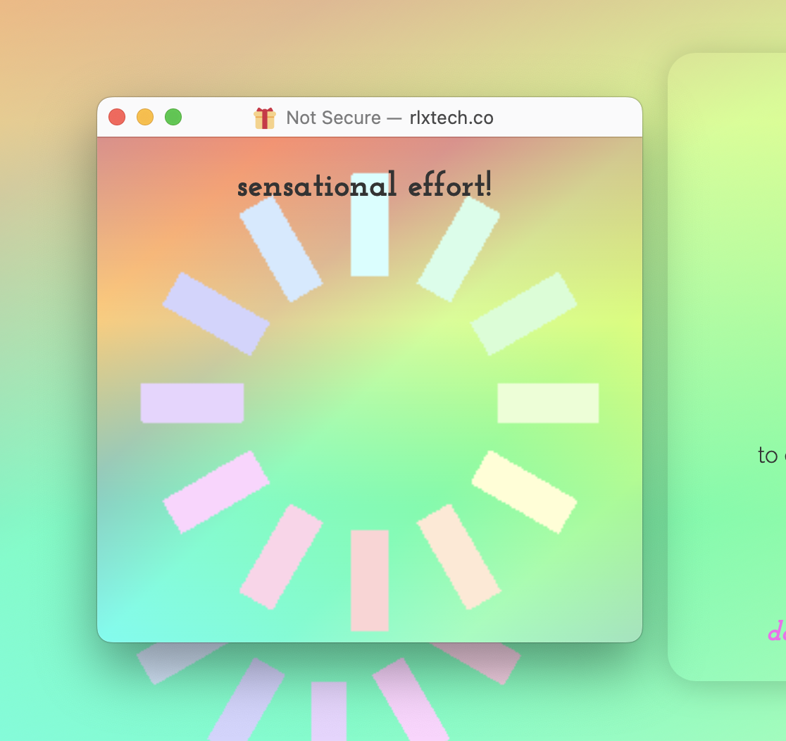
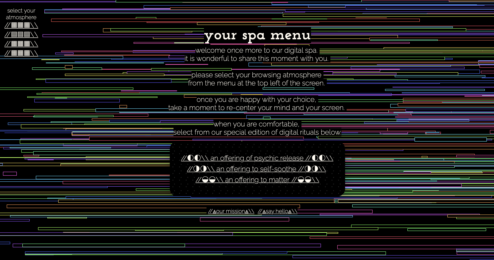
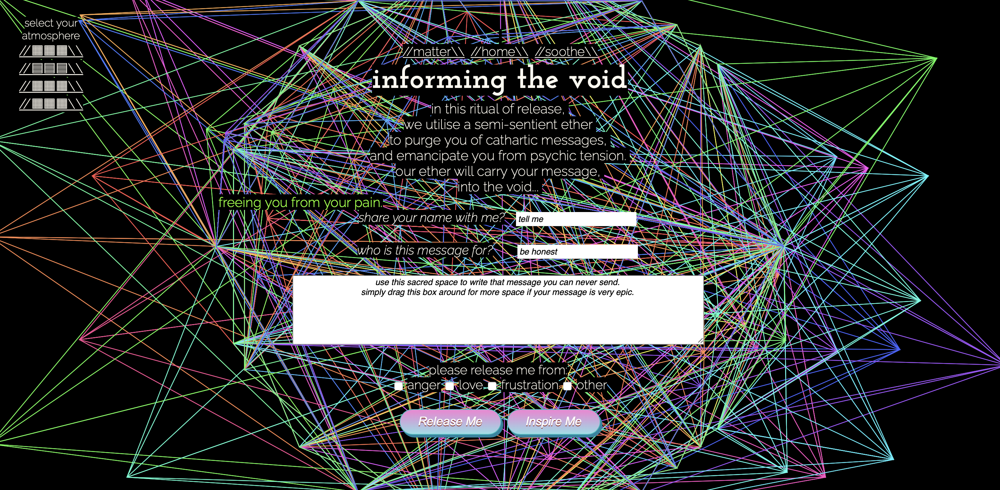

1)Spend two minutes with the experience and notate in granular detail (steps) each action you take.
- Found the welcome sentence as you are entering the landing page. With beautiful graphic and the link that will navigate you to the next page/ next action.

- The next page is an instruction of what to beware of during the sessions.
- Once you click the next link, it is still an instruction page of how to direct each function on the webpage.

- It’s look like the next page is the same page as the landing page to confirm if you want to enter an experience.
- The next link navigated me to the main page that you can select your atmosphere for the online spa session at the top right corner. And in the middle of the page have spa menus link that you can navigate to each session. Both link sections have a blink animation as a background. Make it easier to direct the link.
- First, I try to change the atmosphere. In this case, this website is changing the webpage’s background. Every links has their own design as a background.

- Once you select a spa menu, I selected the first link. And I entered a spa page that I can play with. There are a couple pop-up windows with a gradient pastel colour. And pop-up windows are different sizes.


2) What was the first element you paid attention to when interacting with the experience?
- A welcome message on a landing page. As there is an interesting graphic that combined your attention into one spot. And the colour palate that they are using in the design.
3) What element did you spend the most time engaging with?
-When I selected the spa menu. It a little bit hard to know that which link that I need to go. As I link the link itself has too much information (The sentencing is too long as I don’t want to read that much text sometimes)
4) What was the most common action in your interaction with the experience?
- The most action for this website is interactive link to navigate to the next page. Or a link to make a change on a background. But I would say the most actions is ‘link clicking’ actions.
5) What one term from the circumplex model of affect best describes the feeling that was most common during your interaction?

- I would say that the website give me an avtivation. As I feel excited, alert, happy during online spa session.
6) What is your impression of the intended primary goal of the interactive experience?
- We can really focusing and pay attention of all tasks given. That really meet the goal of being online spa and relaxation website.
7) What stylistic techniques does the experience use to communicate what is sees as the most important aspect of the interaction?
- It's more likely that they using personification technique for this website. Where they using inanimate objects to represented human characteristic.
8) What is your impression of the intended length of the interaction?
- I think as the first I felt this website will take long as it start using one page per one introduction sentence. But after entered main experience. The length is satisfy.
it maybe because I feel very relaxing after then.
9) What is your impression of how often you are intended to interact with the experience?
- If I feel stress or anxiety, I think the first design that I would like to visit is this design.
10) What existing design pattern (media, metaphor, interface etc) does the experience's style reference?
- To be honest, I never using any of interacting online spa or the website that has a content like this before as a website.
But Podcasts also have some channels that has a similar contents.
11) What does this reference suggest about how you should feel and act when engaging with it?
- Maybe the webpage could have more media rather that using 100% interacting style for the session.
Video, background sound could help us to relax even more.
12) What is your impression of the intended audience for this interaction?
- Very satisfy, as I think everyone need relaxation interactive like this. All ages, gender and generation have their own stressful.
So this interaction suits everyone well.
13) What element of the design backs up this impression?
- Relaxing audio. In the otherhand, the content on podcast is the backup rather than design of podcast itself.
What is the most frustrating element of the interaction?
- One of the atmosphere choice. I think these background below are a little bit too much.


What makes it frustrating?
- They are the backgroung that graphing will replete itself as we drug the cursor around the webpage. I think the ralaxation can be a minimal design rather than is repleting coloutful graphic.
16) Why do you think they designed the interaction in this way?
- Maybe the designer wanted the user to pay attention on every movement of ourselves.
17) What is an alternative approach to the interaction design of this element?
- I think we can using a repleting style to present the interaction. But the might chage the sizes and colours of those shape. To make it looks more clean and minimise.
What is the most satisfying element of the interaction?
- Colour palate and interaction design that existed in the design. The way that the interact design is presenting. And I can take a time to relax as I need to read an article on each pop-up pages.
19) What makes it satisfying?
- The design matched with the purpose of thr website. Using cool tone, elements and colours.
20) Why do you think they designed the interaction in this way?
- Because the purpose of the website is an online spa. And the design has a complex link to direct to multiple windows. So, it makes user to take an attention on the design. We need to read and play trough the difference windows. I think it is another way to take my time to relaxing using online platform.
21) What is an alternative approach to the interaction design of this element?
- I might creates more way of interacting on the websote. As this one is mostly like the user needs to close all the pop-up windows.
But we can also add a sesstion like have a graphic of image of head massage. And user can follow all the steps. And I will put a sound music as a soundtrack during the online session.
Created by: Kanyapak Wongtanyakam
S3815242